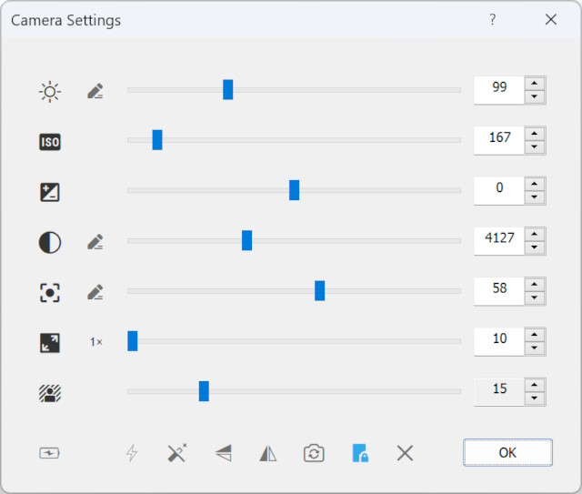
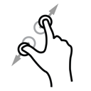

用手机当摄像头的 iVCam，到底值不值得掏钱？
把旧手机变高清摄像头这件事我踩了半年坑，从免费版的"能用就行"到付费版的"省心很多"，算一笔实在账，帮你判断要不要订阅。
半年前有朋友来问我：手里躺着两台退役的 iPhone 和安卓机，能不能当电脑摄像头用？我当时给他推荐了 iVCam——因为这是我试过同类方案里体验最稳的一家。但"稳"和"值"是两回事，这段时间我从免费版一路用到订阅，今天把这笔账算明白。
它到底是什么：把手机变电脑摄像头的桥
iVCam 本质上是在手机 App 和电脑客户端之间建一条视频传输通道——电脑客户端从官方下载拿安装包，手机端从应用商店装 App，两端装好后让你的 iPhone 或安卓机被电脑识别成一块标准的 USB 摄像头。电脑端无论开 Zoom、OBS、腾讯会议还是任何能调摄像头的软件，都能直接选它，不用折腾虚拟摄像头驱动。
这个定位听起来简单，但做起来有几个硬骨头：iOS 有系统级的 USB 访问限制，安卓的 USB 调试又各厂商实现不一，两端还要处理 Wi-Fi 和 USB 自动切换、低延迟传输、对焦防抖这些细节。能把这些事情不露破绽地搞定，本身就值回它在同类方案里的地位。

定价拆解：免费版给什么，付费版多什么
iVCam 在它的官网上提供月付和年付两档订阅，年付大约是月付打六折的力度。关键不是价格数字，而是免费版和付费版之间那条清晰的功能分割线——这条线直接决定了你属于下面要算的哪类用户。
免费版能用的东西：基本的 Wi-Fi 连接和 USB 连接、最高分辨率到 720p、30fps、基本的自动对焦和曝光。说实话，这套东西满足了"手机摄像头替代笔记本摄像头"这个最核心的需求——如果你只是偶尔开个会议、录个网课，画面比笔记本自带的 720p 摄像头好一截，延迟也在可接受范围内。
付费版解锁的东西：1080p / 4K 分辨率、60fps 高帧率、手动对焦锁定、多摄无缝切换（iPhone 的 Back Multiple Camera 模式下超广角/广角/长焦三档镜头自动衔接，这块去ivcam文档里能看到详细的切换逻辑）、背景虚化、背景替换、绿幕模式、直播专用的无压缩传输通道、视频录制、以及 iOS 上的高画质编码（免费版在 iOS 上有编码器降级，画面会有明显的压缩块）。
这里有个定价上挺鸡贼的地方：免费版在安卓上的 USB 连接需要每次手动授权一次，插线就弹框；付费版有记住授权的选项。看起来是小差异，但如果你的使用场景是频繁插拔——比如做直播把手机架上去、下播拔下来充电——这个弹窗会变成高频烦恼。
算账：分三类人算时间账
直接说结论没意思，我们把用户按使用强度分三档，分别算"免费版够不够用"和"付费后每单位时间省多少钱"。注意这里算的是时间账——省下来的时间值不值订阅费，这是我觉得最实在的付费判断标准。
轻度用：偶尔开会、每月录两三次视频
这类用户的典型场景：远程会议每周不超过两次、偶尔录个开箱视频或教程片段，每次录制半小时以内。
免费版够不够？够。 720p 30fps 的画质在会议里没人会挑剔，延迟在 Wi-Fi 模式下 150ms 左右，USB 模式更稳。唯一要花精力的地方是：连接第一次要配对、USB 插线要点信任（iOS）或点调试授权（安卓），每次切换要手动重连一下——总共大概两三分钟的前置动作。
付费能省什么？ 背景替换让你不用收拾背景、绿幕效果让你能随时换场景、4K 分辨率录出来的视频上传到平台后二次压缩更干净。这些都是"锦上添花"级别的改进——你不付这钱，视频照录，只是画面差点意思。
时间账结论：轻度用的订阅完全没必要。省下的时间每小时成本远低于订阅费摊下来的时薪。
主力用：自媒体、播客、稳定直播
这类用户的典型场景：每周直播 3 次以上、视频录制每次一到三小时、对画面质感有明确要求——比如你是做科技评测的博主，录出来的视频要进 YouTube 或 B 站，画质差就是硬伤。
免费版够不够？不够。 720p 在 1080p 显示器上满屏看有明显颗粒感，30fps 快速运动场景会糊，iOS 上免费版的编码器降级会让复杂场景出现压缩块。更要命的是：免费版没有背景替换功能，你要么收拾出干净背景，要么老老实实买个绿幕布挂在身后。
付费能省什么？ 4K 录制后平台压缩成 1080p 画面依然干净、60fps 的流畅度在运动镜头里差距肉眼可见、手动对焦锁定不会出现直播时自动对焦漂移的尴尬、多摄切换让你能从广角全景无缝推到长焦特写。背景替换这个功能尤其值钱——不用挂绿幕、不用找纯色墙，直接换成你品牌的 Banner 或产品图，直播效果的专业度瞬间拉了一个档次。
时间账结论：订阅值得。按年付摊下来每天一块多，省下的背景整理时间、重录时间、画质补救时间，每周至少能挤出半小时，换成你做内容的时间，产出价值远超过订阅费。
重度用：多机位、专业直播、工作室级
这类用户的典型场景：直播间常驻多机位、需要把手机画面同步到导播台、或者把 iVCam 当远程机位用（比如直播间一个机位固定在桌面、另一个机位架在三脚架拍操作）。
免费版够不够？ 完全不够。免费版只支持单手机输入，多机位切换功能、直播专用无压缩传输、以及导播软件的兼容性全部锁在付费版后面。
付费能省什么？ 这档用户算的不是时间账，是替代成本账——要达到同等画质和多机位切换效果，你需要一套完整的直播摄像头 + 采集卡方案，硬件成本小几千起步。iVCam 订阅直接把这部分成本降到了每年小几百。
时间账结论：闭眼付。

替代方案：不付这笔钱有什么路
当然不是只有付费一条路。免费方案里，EpocCam 是同类竞品里最响亮的一个，但它免费版最高分辨率只有 480p，画质退化比 iVCam 严重得多；WebcamMX 是开源的，不用订阅但配置过程极其繁琐，安卓端的 USB 连接基本靠运气；iOS 原生的 Continuity Camera 只能在 Mac 上无缝连接，Windows 用户没戏。
还有一种思路：直接用手机原生相机拍、后期再剪辑合成。这条路画质最好，但操作流程复杂了一个量级——你要同时开手机录屏、电脑录屏、后期剪辑对齐音画。对于日常高频使用的场景，复杂度本身就是一种隐性成本。
降低使用频率也是一种替代——比如你本来想每天录视频，改成每周录一次。这个代价就是你放弃了日更节奏和内容产出速度，适合纯爱好博主，不适合有产出压力的。
一个实用建议：先跑免费版一周再决定
我给想付费的朋友提的建议永远是同一个：先用免费版跑你最核心的使用场景跑一周。别光看功能列表觉得"4K 很重要"，要实际测：你的路由器扛不扛得住 Wi-Fi 传输？USB 连接稳不稳定？你录制的平台最终会不会二次压缩到看不出 4K 和 1080p 的差别？
跑一周下来，如果你觉得"现在的画质和效率已经够用"——那就别付，等真的遇到瓶颈再说。如果跑下来发现"每次重连很烦、画面糊得我想砸手机、背景替换能省我每周一小时"——那订阅费反而是帮你止损的。
结论：哪类人闭眼付，哪类人再等等，哪类人永远不用付
闭眼付：主力用和重度用的用户——自媒体博主、稳定直播、需要多机位的人。免费版的功能边界刚好卡在你需要的刚需上，订阅费的性价比最高。
再等等：轻度用但偶尔有高质量需求的用户——比如你每月有一次重要的会议录制或课程直播，其余时间都是轻度使用。这种情况可以按需临时买一月订阅，用完就取消，不必常年挂着。
永远不用付：轻度用且对画质没有硬要求的用户——每月开几次普通会议、偶尔录个教程片段。免费版能覆盖你的所有需求，付费的钱省下来买两杯咖啡更香。
这个分档逻辑其实适用于所有"免费版够用但付费版真香"的订阅制软件：别光看付费版有什么炫酷功能，先把自己塞进档位里对号入座，再算这笔时间账。
以上就是我半年用下来的全部真实体验——这套资料在 GitHub、Gitee、GitCode 三个仓库都有同步，方便你对照着做最终决定。